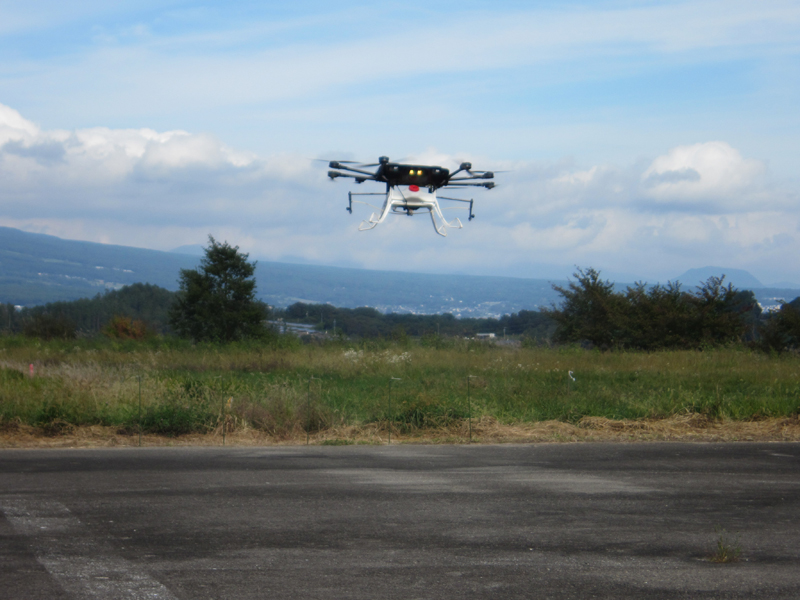
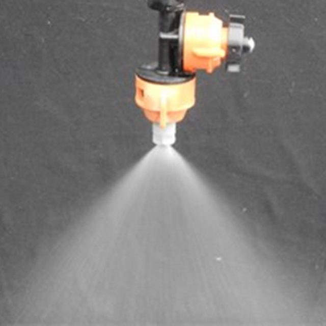
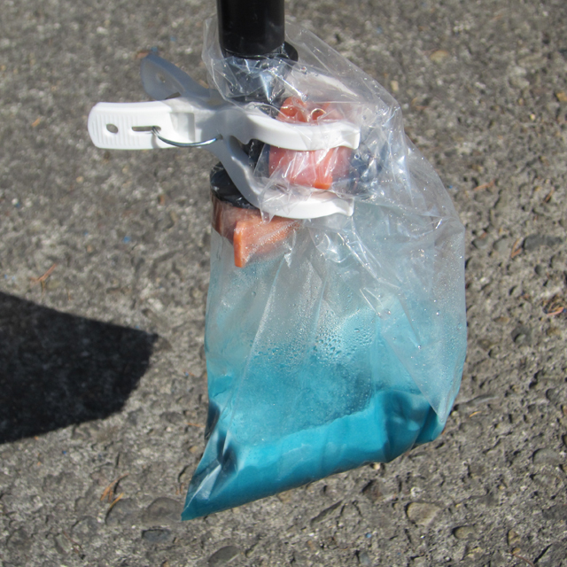
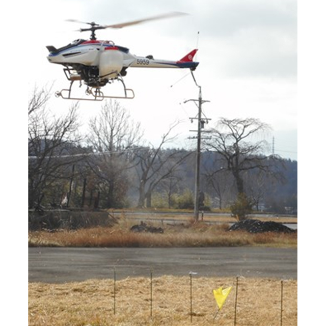
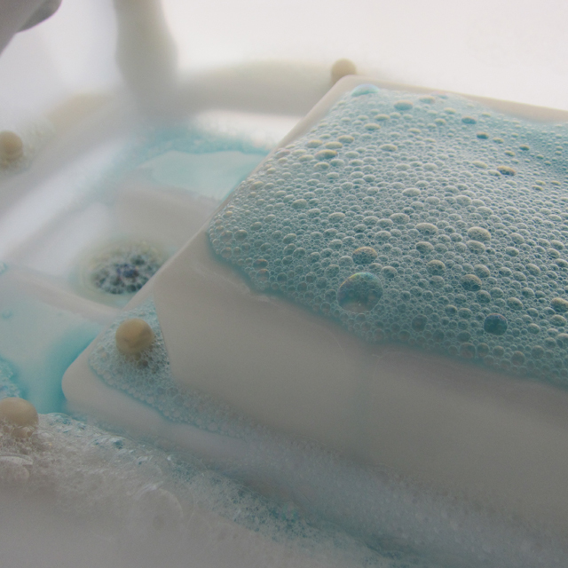
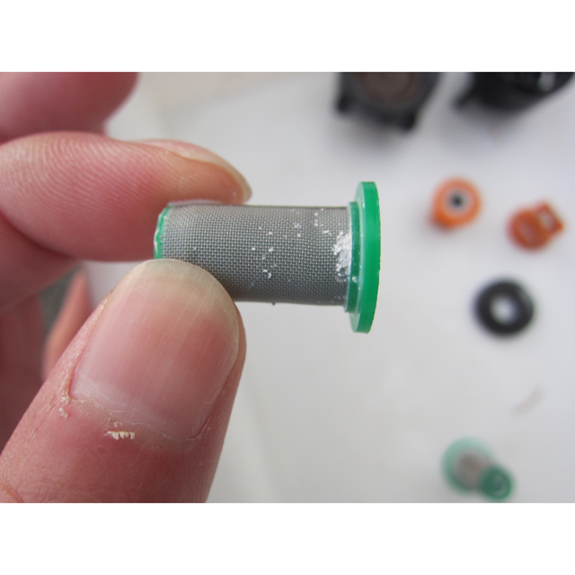
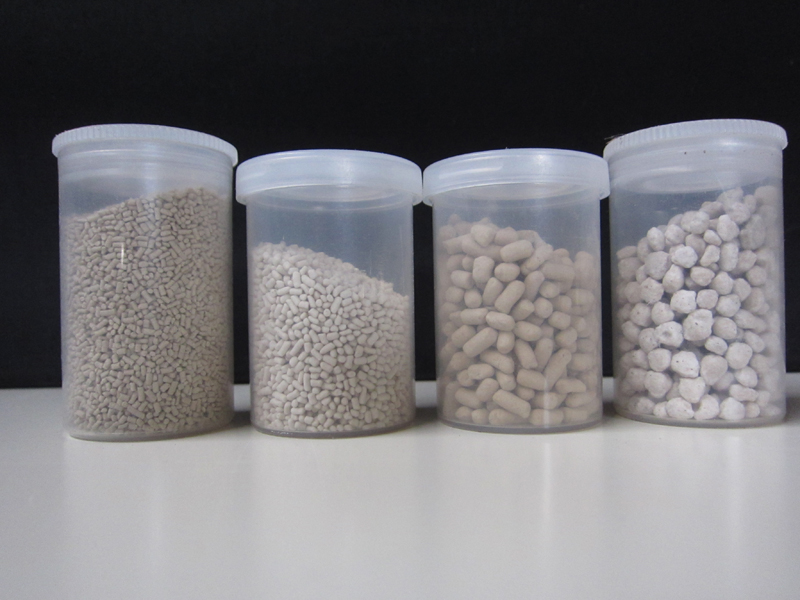

基礎試験
農林航空技術センターおよび関連施設で実施する製剤の物理性・薬効・薬害・落下分散性の基礎的事項に関する小規模モデル試験および実験室内試験です。
（１）無人航空機および散布装置の性能確認試験
機種ごとに、農薬散布、播種、施肥等の適切な実施のために、散布にあたっての散布装置からの吐出性、散布飛行における、
散布資材の分散状況（広がり）からみた、飛行速度、飛行高度、飛行間隔などの最適な飛行諸元を調査し、散布装置の性能を確認します。
- 目的例
-
- 農薬等の適正散布に向けたデータ取得
- 調査内容
-
- 吐出調査 希望の資材の吐出につまりが生じないか、散布量に適合する吐出量に調整が可能か、水道水または農薬を使用して評価
- 落下分散調査 落下分散幅や散布の均一性を評価
- 固形製剤については、大きさ、比重の異なる資材の吐出量の調整が可能か評価
- ノズルの個数、取付位置や吐出圧を変えた場合の落下分散調査、落下分散幅の調査
- 実績
-
- 令和4年度新設
- 飛行間隔を決定するための有効散布幅の調査 1機種（平成28年度）
- 無人航空機による液剤落下分散調査 1機種（平成30年度）

（２）農業用資材と散布装置との適合性試験
申請して頂いた試験農薬がご希望の無人航空機機種による散布に適合するか調査します。（※使用機体は相談）
①液剤系農薬、肥料
高濃度の液剤系農薬は、個々に異なる吐出、噴霧になることがあることから、実際の農薬を使用し、無人航空機用散布装置との適合性を調査します。
- 目的例
-
- 無人航空機散布において不具合発生の有無のデータ収集
- 調査内容
-
- 薬剤調製から散布、機体洗浄までの問題点を抽出
- 噴霧、吐出状況（途切れの無い吐出）調査により試験農薬と水道水を比較し、特性を調査
- 噴霧状況、噴霧したときの拡がり（噴霧角度）、液滴痕（被覆面積率、粒径区分）の調査
- 実績
-
- 令和２～５年度 液剤１６剤について調査を実施

噴 霧 
吐出量 
噴霧状況 
タンク残渣 
ｽﾄﾚｰﾅｰ残渣
②液剤系農薬混用
液剤系農薬の現地混用について、無人航空機用散布装置による調査や実験室規模のモデル試験により混用の可否を評価します。
- 調査内容
-
- 実機散布装置を用いた調査
- 室内モデル試験
- 静置法（所定時間静置後の薬剤の状態）
- 循環法（ポンプを用い所定時間循環させた後の薬剤の状態）
各方法における分離、沈殿、残渣の有無、ストレーナー通過性を調査
- 実績
-
- 令和２～４年度 液剤９組について実機調査を実施
③固形剤系（農薬、肥料、種子等）
粒剤や肥料、種子などの固形資材は、資材の散布条件に適合する吐出量の調整、飛行間隔などを調査します。
- 調査内容
-
- 吐出調査 資材の散布条件に適合する吐出量に調整できるか調査
散布資材の途切れの無い吐出の確認 - 落下分散調査 分散幅や散布の均一性を評価
- 吐出調査 資材の散布条件に適合する吐出量に調整できるか調査
- 目的例
-
- 無人航空機による散布で不具合発生の有無のデータ収集
- 圃場端の散布のための分散幅のデータ収集
- 実績
-
- 令和２～５年度 １２資材について調査を実施
